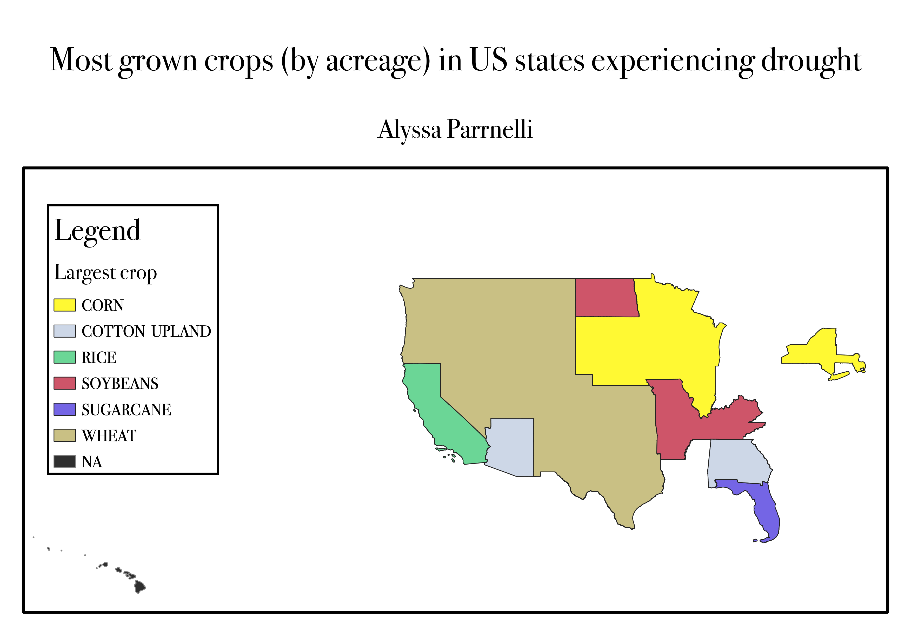

Homework 8
Alyssa Parrnelli
Map

This map shows the states in the US which are experiencing at least a D2 level (severe) drought somewhere within the state.
The map shows the crop which is grown in the largest amount of acres in each state.
To create this map, I used intersect to see only the states that were at least a D2 drought and intersected that with the agricultural information. Only the states experiencing drought remain on the map.
I then used dissolve to create regions based on the most commonly grown crop instead of looking at individual states.
I wanted to see if there was a correlation between states that were in some kind of drought and the types of crops grown there.
By looking at the map, it seems that a majority of areas experiencing drought grow wheat.
Data used for this project
Cleaned CSV agricultural dataset
CSV dataset link to drought information
Cleaned CSV drought dataset
Excel dataset link to crop acerage information from August 2, 2021
Link to vector layer of states